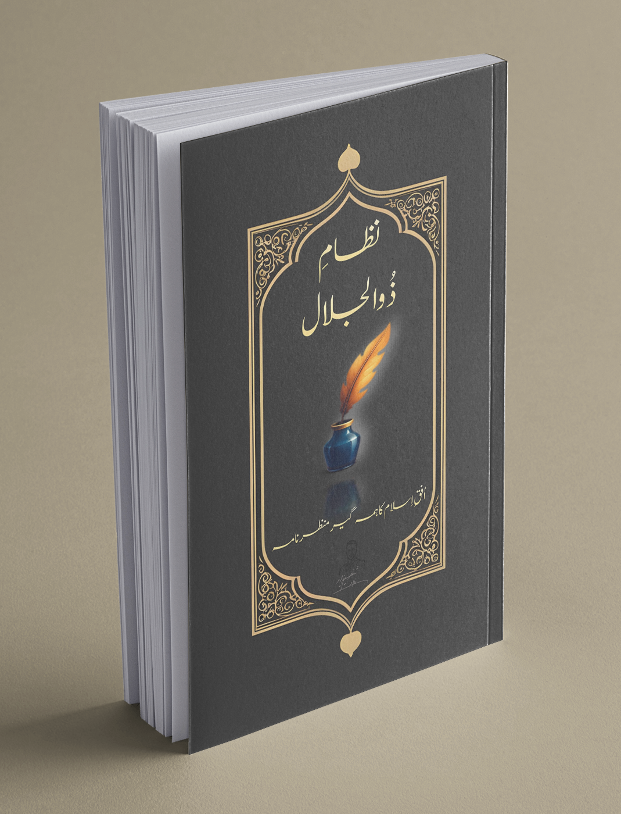

Explore deep spiritual wisdom, Islamic philosophy, and reflections on existence and divine purpose.

Author: Nadeem Shahzad Fida
Description: This Urdu work blends Islamic wisdom, spirituality, and philosophical thought.
It explores the Oneness of Allah, mysteries of existence, and the soul’s relationship with the Creator, awakening both heart and intellect.

Author: Nadeem Shahzad Fida
Description:
The lamp of guidance, when placed in the hands of Prophet Adam (peace be upon him), illuminated a single path for humanity.
From that moment until the Seal of the Prophets, Prophet Muhammad ﷺ, mankind has been shown only one way — the Straight Path known as Islam.
This path does not change nor disappear; it simply reflects new images in the mirror of time, repeating the same eternal truth in different forms.
This book is a quiet journey in search of that truth — the journey of a student who does not claim greatness nor final authority,
but merely records what he has learned and understood.
If there is any error, weakness, or shortcoming, it should be attributed to my humble state as a student.
The final and perfect word belongs only to the Book revealed from the Preserved Tablet — the Book that is free from all flaw
and whose every letter is light.
What I have written is simply an expression of my modest insight.
My effort should be seen only as a small attempt, not as a standard or measure,
because the true brilliance of guidance always comes from the torch that God Himself has lit.